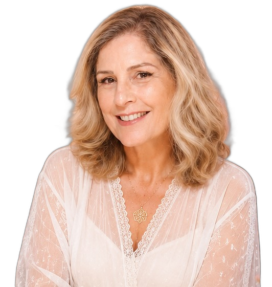

Metodologia Quântica Juan de la Luz®
Canal de Luz desde 2007
"Você é uma criatura das estrelas. Sua luz brilha diferente e o universo inteiro aguarda que você simplesmente seja."


Advogada, Psicóloga e Mestra em Artes pela Unicamp — que encontrou o cosmos.
Desde os 15 anos busco as dimensões mais profundas da consciência. Em 2007, o encontro com o Mestre Juan de la Luz reuniu todos os conhecimentos fragmentados em um único fio dourado de sentido, amor e luz.
Sou Canal de Luz desde 2007 na Metodologia Quântica JDL — com certificação 2024–2026 e a mais longa trajetória documentada entre todos os Canais de Luz no Brasil.
Meu diferencial único: a rara capacidade de unir o Direito (estrutura e mediação), a Psicologia (padrões e inconsciente), as Artes e quase duas décadas ao lado do Mestre — para acessar a Biblioteca Estelar e traduzir essa sabedoria em linguagem que cada ser pode integrar na vida concreta.
Em 2025–2026, atravessei e venci um processo oncológico continuando ativa como canal. Essa travessia representa a mais profunda integração entre o que se sabe e o que se vive na matéria — tornando minha presença ainda mais poderosa e autêntica.
✦ São Paulo, SP, Brasil
Acesso privilegiado ao repositório cósmico de sabedoria. Entrego a cada ser a chave de acesso aos seus próprios registros.
Traduzo frequências ancestrais em linguagem que o ser pode integrar e manifestar na matéria.
Organizo campos energéticos complexos em mapas claros — equilibrando espiritual e material, feminino e masculino.
Ponte entre o mundo estelar e o mundo concreto. Acesso simultâneo às dimensões da essência, dos registros e da matéria.
"Minhas terapias são como mapas abertos sobre a mesa, mostrando a direção e os pontos exatos para acessar a potencialidade."
— Robertha Aranha
Experiências únicas que só existem através de quase duas décadas de processo e acesso à Biblioteca Estelar.
Online ou Presencial
Terapia base da Metodologia JDL, criada pelo Mestre especificamente para Robertha. Abre o campo de consciência do ser — conectando personalidade à sabedoria da essência. Ideal para primeiro contato com a metodologia.
Online ou Presencial
Robertha entra na Biblioteca Estelar e traz a história-raiz do padrão que o ser carrega. Não é hipnose nem regressão: é ativação real de consciência. O ser recebe a chave de acesso aos seus próprios registros.
Online ou Presencial
Leitura do mapa de potencialidades que a essência trouxe nesta vida — combinando visão astrológica com a consciência energética JDL. Complementa os Registros: o mapa mostra as ferramentas, os registros revelam por que estão travadas.
Online ou Presencial
O ser formula suas perguntas mais profundas e Robertha canaliza as respostas diretamente dos seus guias e seres de luz. Informação precisa e pontual de um nível de consciência que transcende a mente.
Projeto coletivo de expansão de consciência
Junto com Yara Racy e Chrys Hellen, as três Canais de Luz formam o coletivo Alegre-Ser — um espaço de expansão de consciência para indivíduos, famílias e organizações.
Lives semanais no Instagram e vídeos de consciência
PodSer — podcast semanal abordando ego, essência, curas, relações e propósito
Palestras e vivências corporativas — em conformidade com a NR-1
Grupos de estudo online e presencial
Travel-In — retiros presenciais "Viagem para Dentro"
"Não é um trabalho que exige esforço. É um trabalho que se faz no descansar, no entregar, no sorrir."
— Robertha AranhaCanalizações de Robertha Aranha — mensagens dos Seres de Luz traduzidas em frequência de amor. Busque pelo que sente e receba a frequência que precisa.
"Você é uma criatura das estrelas. Sua luz brilha diferente — e o universo inteiro aguarda que você simplesmente seja."
— Seres de Luz, Terapia de Recertificação 2025"Canalizar é traduzir energia divina em palavras. A informação chega como sentimentos profundos, imagens ou sons — e o coração sabe como traduzir."
— Imersão Quântica, jul. 2025"A constância nas ações para se fortalecer como canal vem de elevar sua vibração e entrar nessa consciência superior do teu ser."
— Seres de Luz, Recertificação 2026"Você não veio aqui para repetir os mesmos ciclos. Você veio para acessar quem você é — e eu tenho a chave."
— Robertha AranhaPessoas em transição de saúde, relacionamentos ou propósito
Profissionais em busca de alinhamento interior
Mulheres na meia-vida redefinindo seu caminho
Executivos e equipes buscando equilíbrio emocional
Pessoas que sentem que há mais além do que vivem
Quem quer acessar a sabedoria da sua própria essência
Clique abaixo e fale diretamente comigo pelo WhatsApp.
Online ou presencial em São Paulo, SP.
✦ Online para todo o Brasil e exterior ✦ Presencial em São Paulo, SP